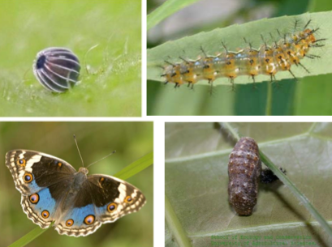

TUBER VEGETABLES :: MAJOR PESTS :: BLUE PANSY
3. Blue pansy: Precis orithya (Nymphalidae: Lepidoptera)
Host range: Sweet potato, weed striga
Bionomics
Moths are medium-sized with only two pairs of functional legs. More than half of fore wings are velvety black. Hind wings are blue shaped with velvety black towards the base, thus wing pattern resembles the pansy flower. Incubation, larval, pupal periods, adult longevity and life cycle last for 3, 14 to 16, 4 to 8, 3 to 7 and 27 to 29 days respectively.
It is actually a beneficial insect as it feeds on Striga, a weed parasite on sugarcane roots.
|  |
Precis orithya |
Damage symptoms: Defoliation
Management
- After harvesting, give deep ploughing and flood infested fields to kill pupae and to prevent carry-over of pests
- Collect and destroy egg clusters and leaves bearing caterpillars to prevent population build-up
- Spray dichlorvas 660 ml or endosulfan 35 EC 750 ml to control widespread infestation